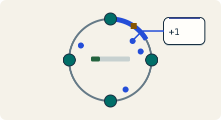

Go deeper · 7 minutes
Consistent hashing and moving data
Adding one machine can mean moving a little data or nearly all of it.
Open this lesson
One new machine, a long night
You have eight storage nodes and 8 TB of user records. You add a ninth. The disks have room, but the next morning is spent copying records while live requests wait. Placement decides how much work a small expansion causes. Hashing a user id spreads keys. It does not by itself tell you how to change the number of owners safely.
Keep most owners in place
Add or remove an owner under modulo and ring placement. Green marks identify keys that changed owner. Virtual positions can improve spread; a popular key still stays whole.
Worked example: moving 8 TB
These copy times assume uniform hashes, equal record sizes, decimal TB and no replicas. They are lower bounds. Reads, checksums, retries and new writes share the same disk and network. Reserve bandwidth and failure headroom, then measure the gap between snapshot completion and actual cutover readiness.
Copy lower bounds
- 8 TB / 9: A balanced ring copies about 0.89 TB. The source keeps its records.
- 100 MB/s reserved: 0.89 TB takes about 2.5 hours. Modulo copies about 7.11 TB in 19.8 hours.
- Still catching up: Live writes, checksums and retries add work after the snapshot.
Move ownership as carefully as bytes
Move a range while writes arrive. Try snapshot, replay, fence and route in your own order. Check which acknowledged writes the new owner is missing, then reset and fix the sequence.
Key numbers
- Modulo move
- ≈ 7.11 TB. 8 TB × 8/9 when changing 8 owners to 9
- Ring move
- ≈ 0.89 TB. 8 TB ÷ 9 under balanced uniform placement
- Copy floor
- ≈ 2.5 hours. 0.89 TB ÷ 100 MB/s; excludes catch-up and replicas
Check your reasoning
Think through these questions before opening the lesson. In the game you can test the idea and compare your reasoning.
- Eight equal nodes hold 8 TB without replicas. A balanced ring adds a ninth. Which plan preserves live writes during the move?
- Why bother with a ring at only eight nodes? Follow-up: how would you prove the expansion is safe?
- One partition key receives 40% of writes. What does doubling virtual nodes do to that key?
- We added nodes and p99 got worse. What would you inspect? Follow-up: the hottest key still overloads one owner.
- The snapshot and change replay are complete, but routers still use two map versions. What protects subsequent writes?
The key point
Plan the ownership change and the bytes it moves, not just the final node count.
Practise this idea
- Easy
URL shortener
People paste a long web address and get back a short one. Millions of other people then tap that short link, so reading is almost everything. Keep every tap fast, and never lose a link.
- Hard
Object storage service
Customers store billions of files, from tiny pictures to huge videos, and fetch them by name. The service must never lose a file, scale without a limit and stay cheap. Most files are written once and rarely read again.
- Medium
File sync
A folder on your laptop mirrors to the cloud and to your other devices. Small changes must arrive quickly, big files must upload reliably, and a shared folder with thousands of people must not melt the metadata service.
- Hard
Logs platform
Build a shared log service for 2,000 teams. Collectors send compressed chunks, and on-call engineers find logs by tenant, service and time before filtering their words. A wide search or a runaway label must not stop other teams from investigating an outage.